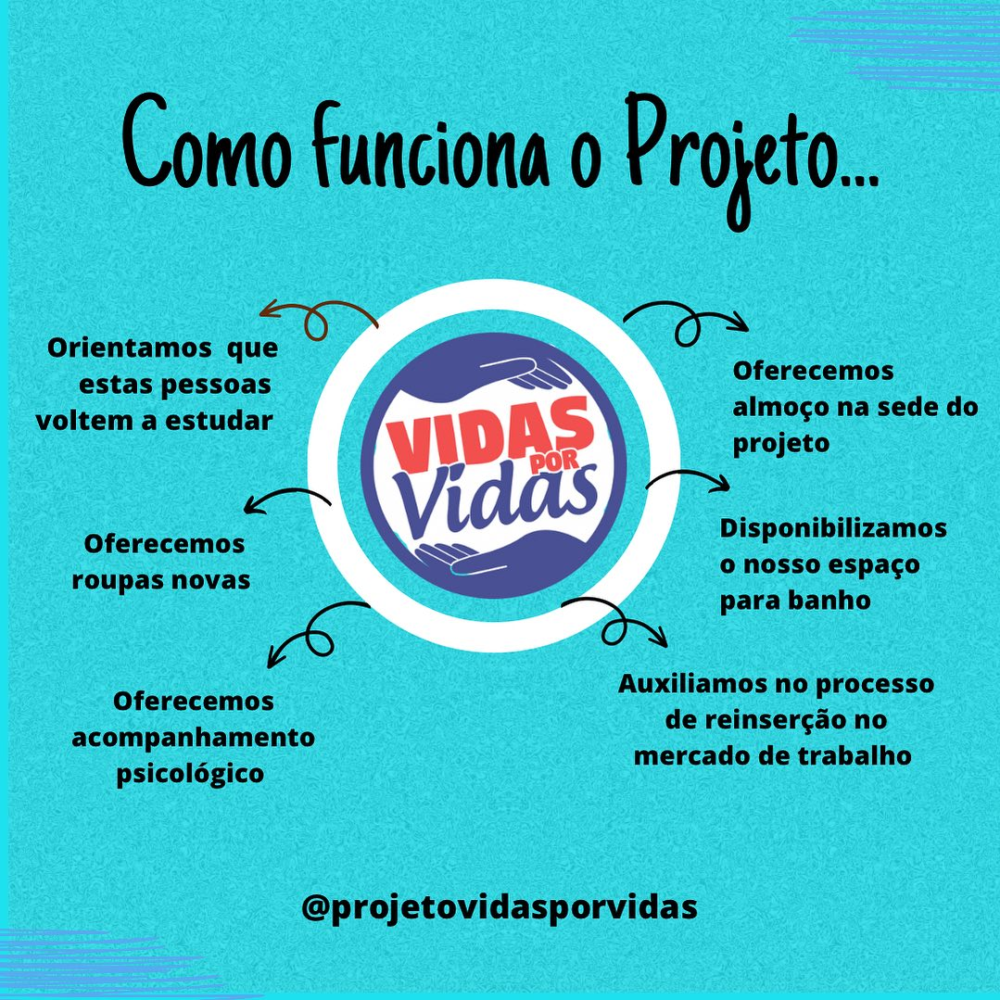
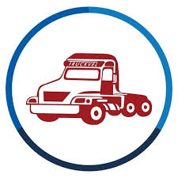
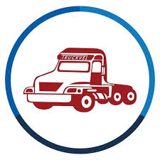

Quem somos:

O projeto “Vidas por Vidas” é uma iniciativa voluntária que busca fornecer apoio essencial para pessoas em situação de rua, especialmente durante os meses mais frios. Nosso objetivo é oferecer refeições nutritivas e agasalhos para aqueles que enfrentam desafios diários nas ruas.
Aonde estamos localizados:

Parceiros
 
